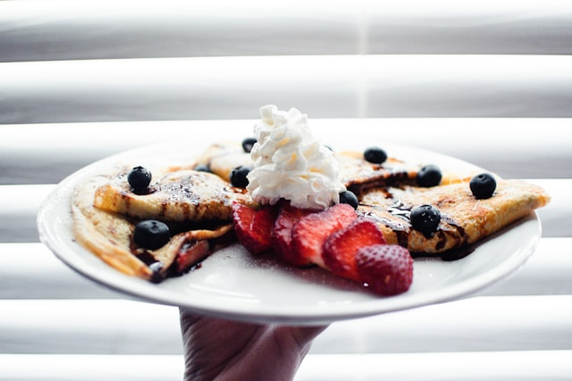

Crepes

Crepes are thin pancakes that can be filled with a variety of sweet or savory fillings. They are a versatile dish that can be enjoyed for breakfast, dessert, or even as a main course.
Light, thin, and delicious French-style pancakes perfect for breakfast or dessert.
Ingredients
- 1 cup all-purpose flour
- 2 eggs
- 1/2 cup milk
- 1/2 cup water
- 2 tbsp melted butter
- 1/4 tsp salt
Instructions
- In a bowl, whisk together flour and eggs.
- Gradually add milk and water, stirring to combine.
- Add melted butter and salt; mix until smooth.
- Heat a lightly oiled skillet over medium-high heat.
- Pour about 1/4 cup of batter into the pan, tilting to coat evenly.
- Cook for 1-2 minutes, flip and cook the other side until golden.
- Serve warm with your favorite fillings or toppings.
Back to Recipes